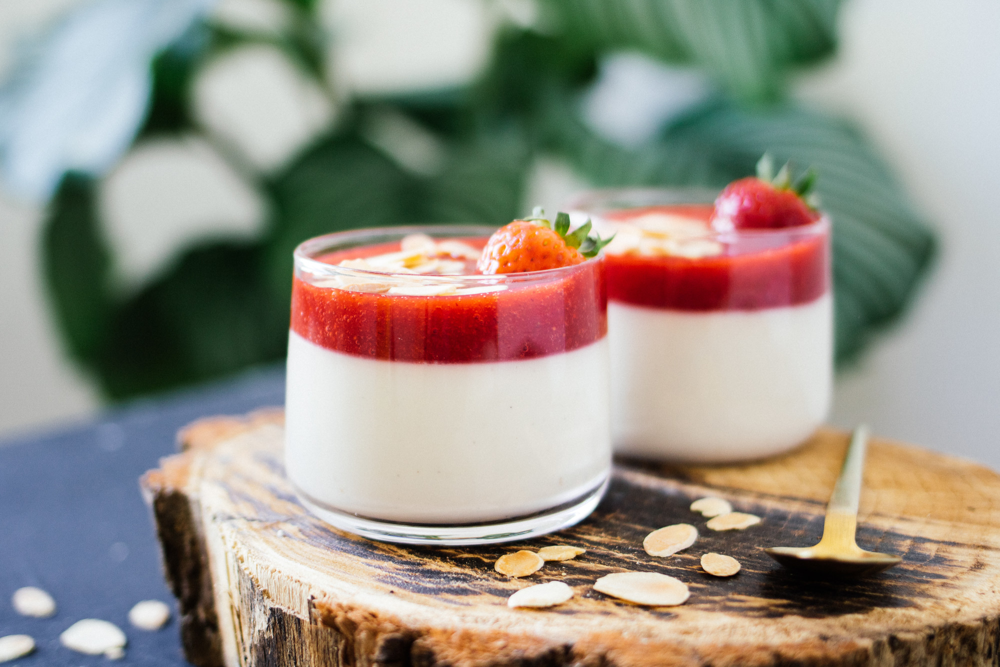

mit Himbeersauce
Zutaten
- Panna Cotta
- 500ml Rahm
- 50g Zucker
- 1–Vanilleschote
- 2 Blatt Gelatine
- Himbeer-Topping
- 300g gefrorene Himbeeren
- 1 Blatt Gelatine
Anleitung
Rahm, Zucker und Vanille aufkochen und ca. 15 min köcheln. Vom Herd nehmen und ca. 10 min stehen lassen. die beiden in kaltem Wasser aufgeweichten Gelatinen hineinführen, weiterrühren und durch ein Sieb pressen. Anschliessend gefrorene Himbeeren aufkochen, Gelatine hinzufügen und auf dem bereits etwas gefestigtem Panna Cotta verteilen.